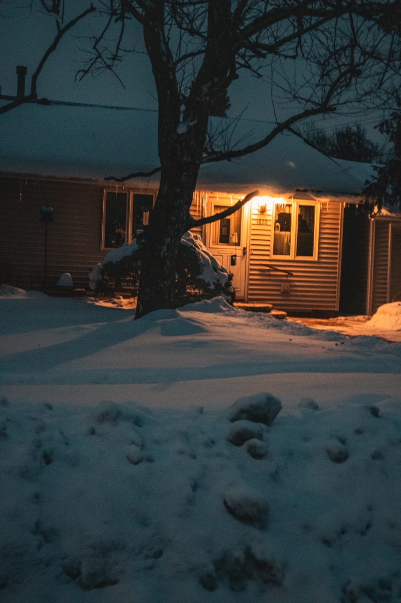
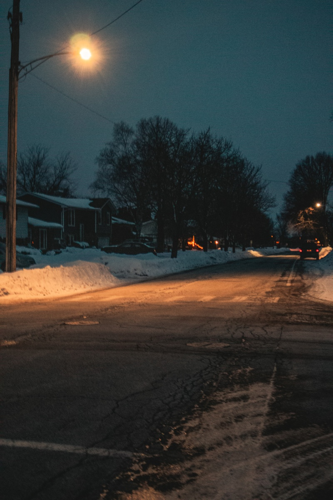
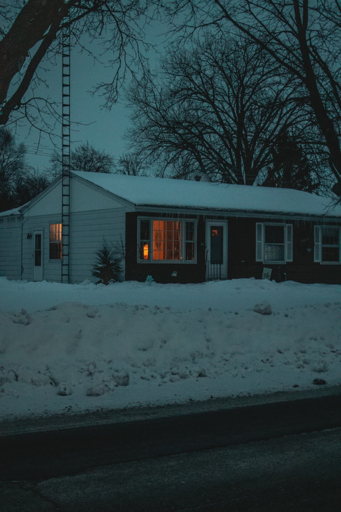
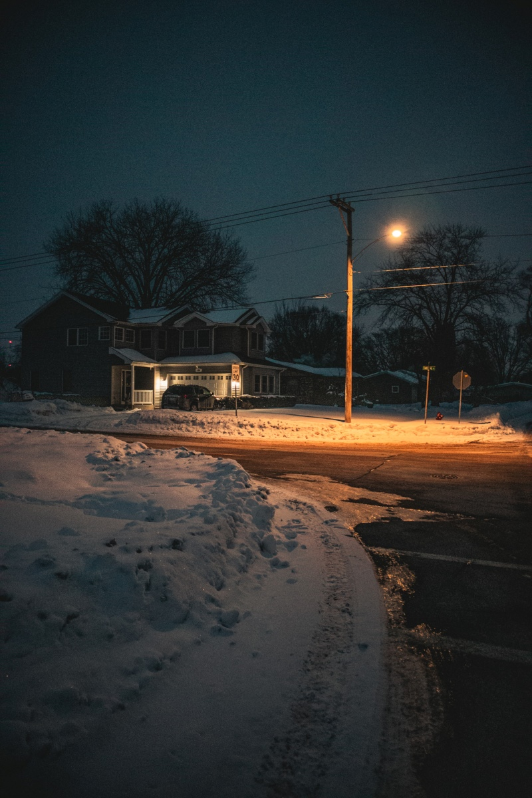
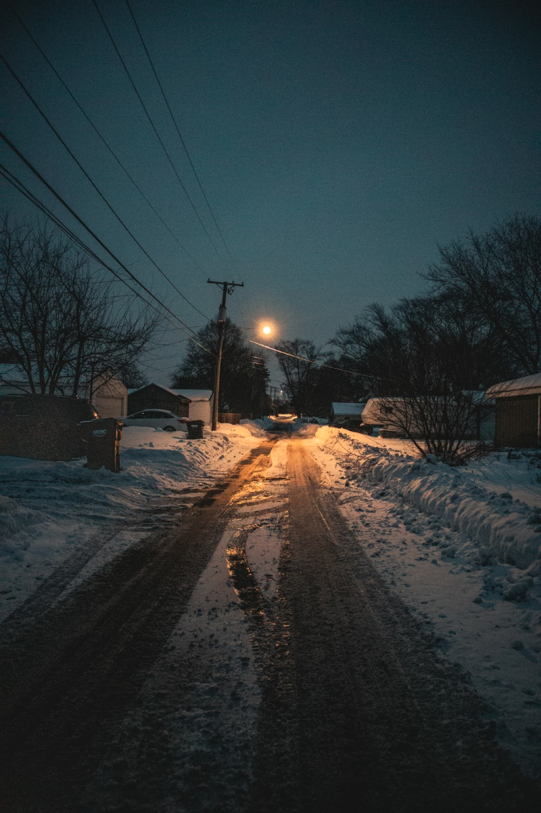

I took these photos in the morning around my neighborhood after a snowfall. I aimed for a cozy, nostalgic feel by capturing quiet streets, snow-covered houses, and warm light spilling from windows and streetlights. I liked the contrast between the cool blue tones of the snow and early morning sky and the warm orange lights throughout the neighborhood. The empty streets and familiar houses also give the photos a peaceful feeling, almost like a memory from a quiet winter morning. Inspired by Todd Hido




